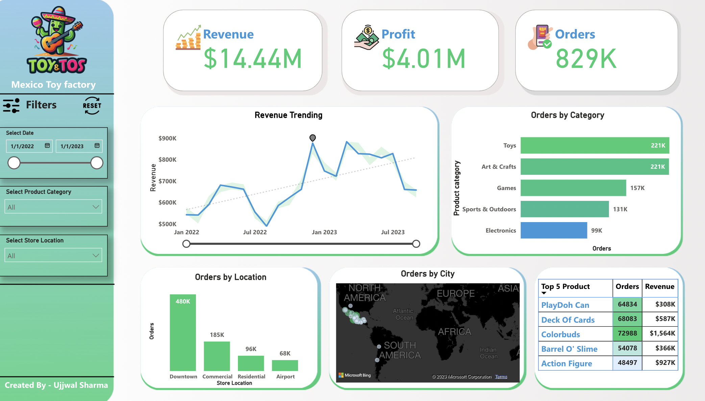
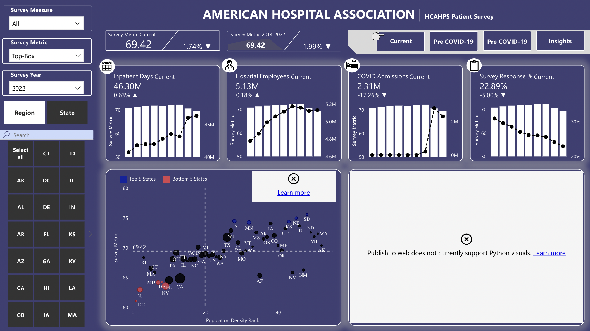
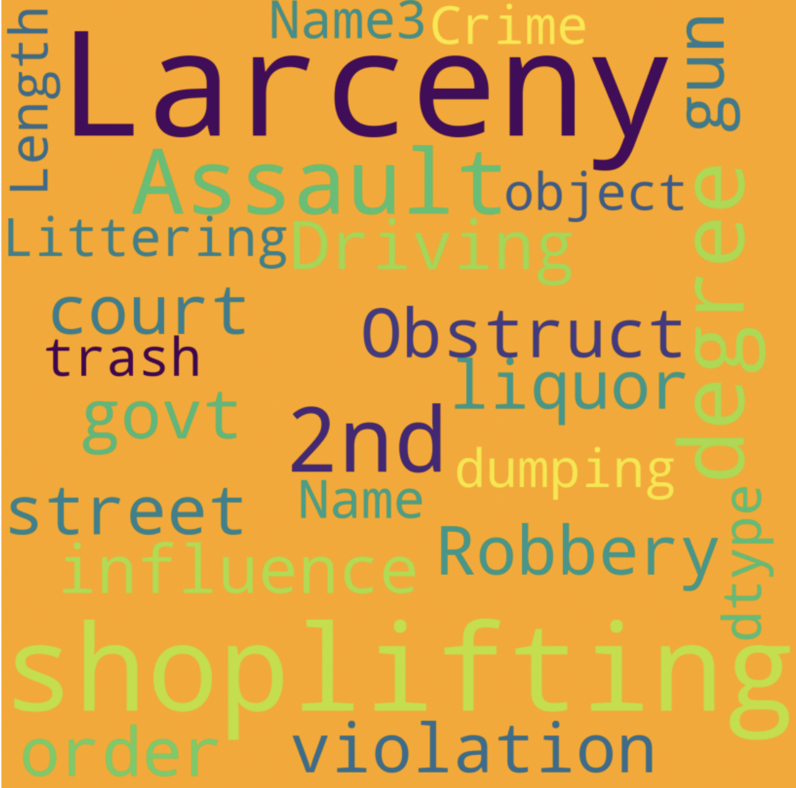
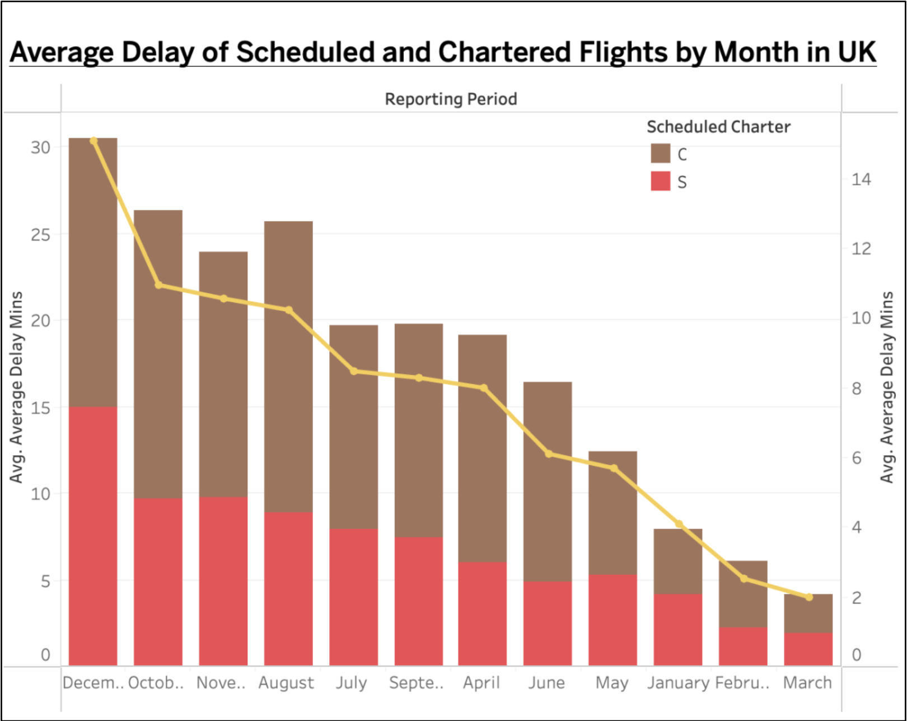
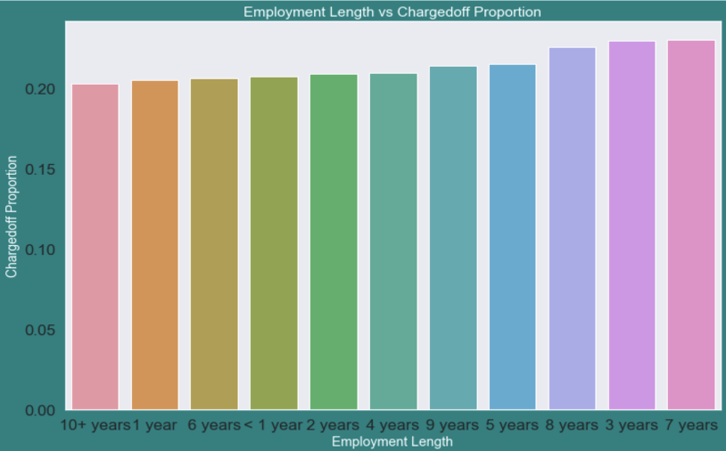
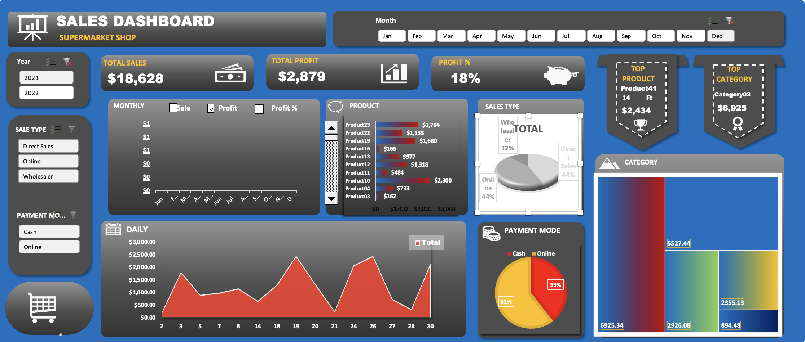
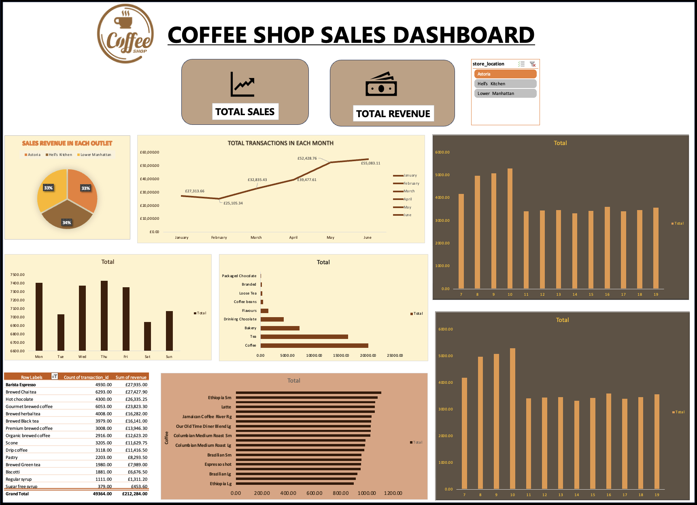
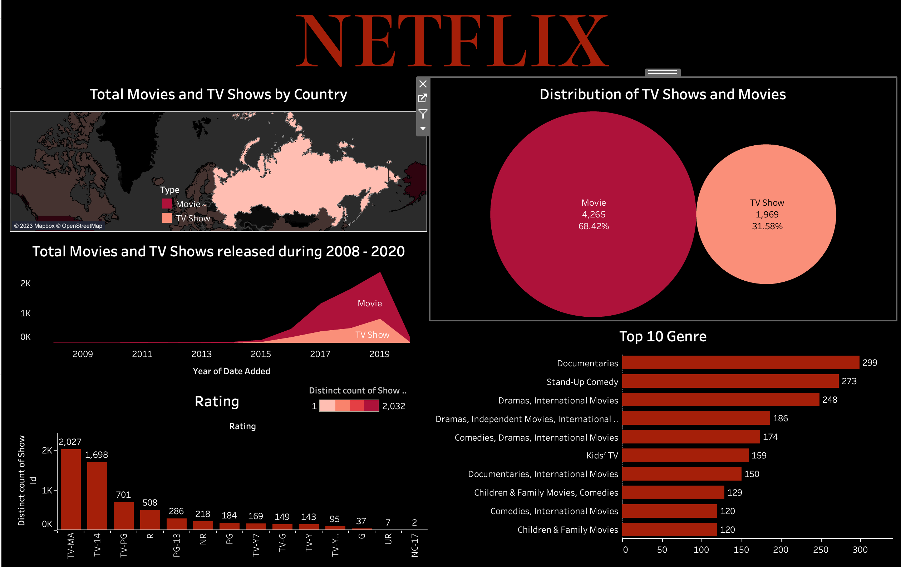

Toy Store Dashboard
Eploratory data analytics of a large set of HR data on Kaggle.com by Faisal Qureshi
to
understand
correlation and create a prediction model for response variable for 'Employee
Satisfaction Level' in relation to given predictors. Statistical analysis was
performed
through Multiple Linear Regression with R programming in Kaggle Notebooks using R
Markup.

Hospital data analytics
Exploratory Data Analysis of a large set of medical appointment data on Kaggle.com by
Marwan Diab to understand correlation and create a
prediction model for response variables in relation to given predictors. Statistical
analysis was performed through logical regression with R programming in Kaggle
Notebooks
using R Markup.

Montgomery Crime Analysis
Montgomery County has documented over 300,000 crimes in the past five years. The available data is adequate to analyse occurrences and detect patterns or relationships.The main benefit would be identifying criminal motives and patterns. The analysis was perfomed using Python and Excel.

Flight Punctuality
The dataset used for this project is punctuality statistics for selected UK airports. There are 12 files for each month of 2021. This data is used for research using a data warehouse & Tableau.

Lloyds banking group dig data challenge
This project aims to understand and summarise the different behaviours or attributes between customers who paid back their loan and customers who did not. Analysis is performed using Pivot
Tables
and visualized with pivot charts in an interactive dashboard.

Walmart Sales Data 1 - Statistics
A sales statistics dashboard created in Tableau. This project utilizes Walmart Sales
Data
of approx. 6400+ rows of sales data from
Kaggle.com by Rutu Patel.
The data cleaning and analysis was performed with SQL using Azure Data Studio 3 and
Docker on MacOS. This is the statistical portion of the data viz on this
dataset.

Coffee Shop Sales Dashboard
A sales statistics dashboard created in Tableau. This project utilizes Mavern Coffee shop Data of three outlets.The data cleaning, analysis and visualisation was performed with Excel.

Netflix Statistics
A tableau visualization on the statistics of Netflix shows.